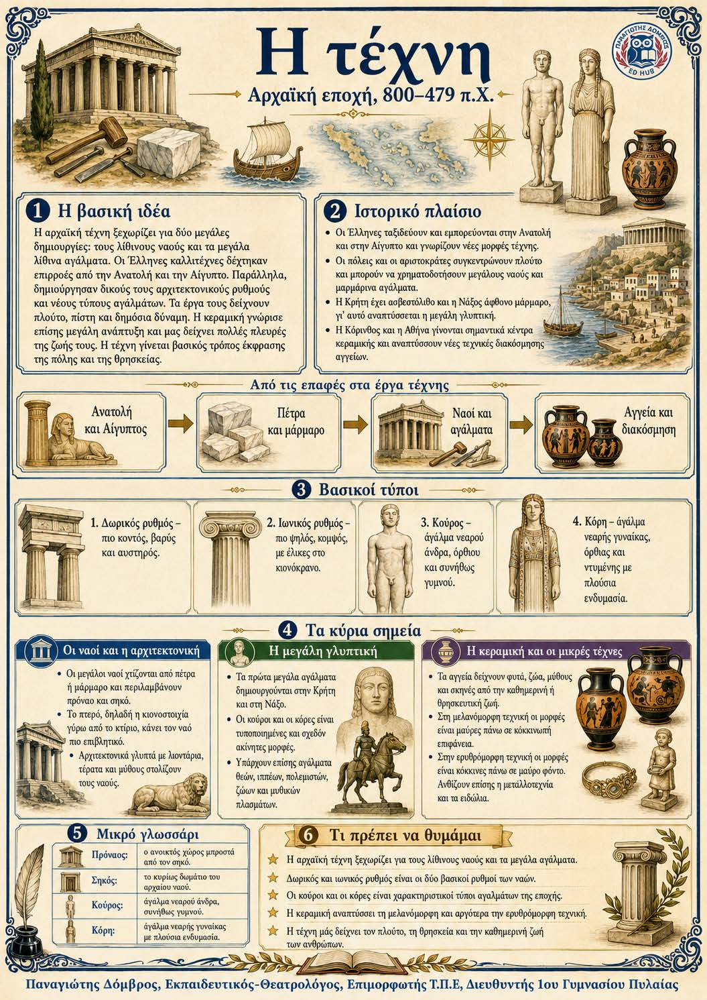

Πληροφοριογράφημα ενότητας
Το πληροφοριογράφημα αυτής της ενότητας δεν έχει ανέβει ακόμη. Οι σημειώσεις παραμένουν πλήρως διαθέσιμες.

Κεφάλαιο 4 · Αρχαϊκή εποχή, 800–479 π.Χ.
Η αρχαϊκή τέχνη ξεχωρίζει για δύο μεγάλες δημιουργίες: τους λίθινους ναούς και τα μεγάλα λίθινα αγάλματα. Οι Έλληνες καλλιτέχνες δέχτηκαν επιρροές από την Ανατολή και την Αίγυπτο. Παράλληλα, δημιούργησαν δικούς τους αρχιτεκτονικούς ρυθμούς και νέους τύπους αγαλμάτων. Τα έργα τους δείχνουν πλούτο, πίστη και δημόσια δύναμη. Η κεραμική γνώρισε επίσης μεγάλη ανάπτυξη και μας δείχνει πολλές πλευρές της ζωής τους. Η τέχνη γίνεται βασικός τρόπος έκφρασης της πόλης και της θρησκείας.
